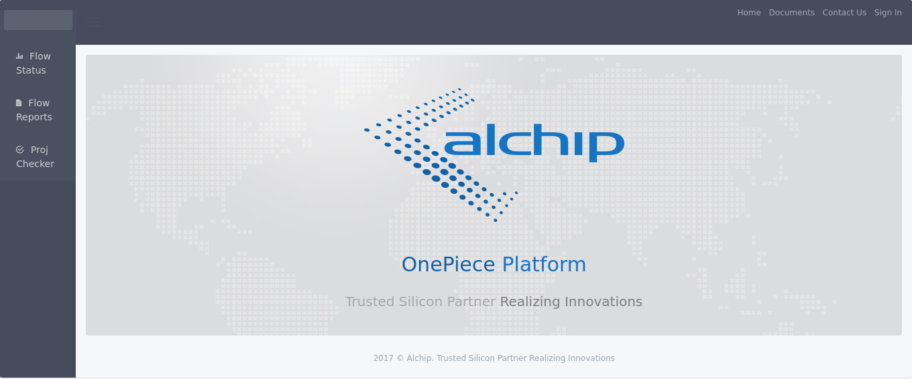
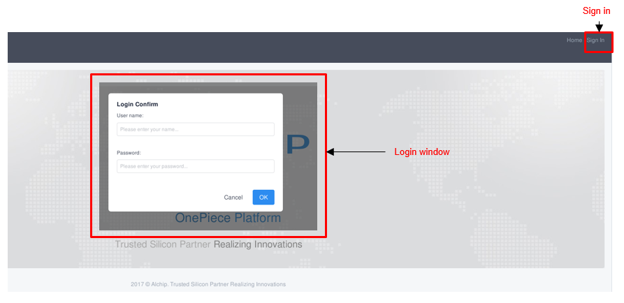
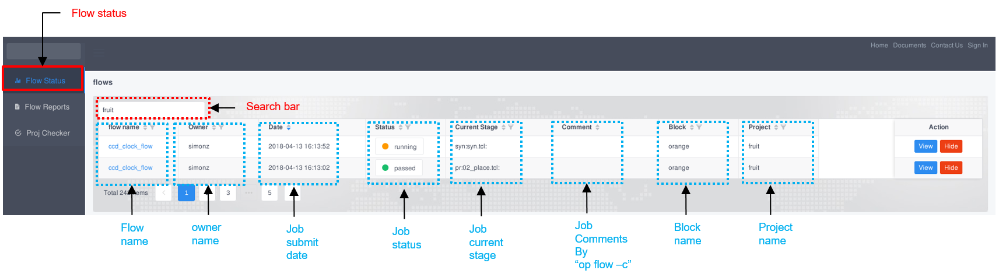
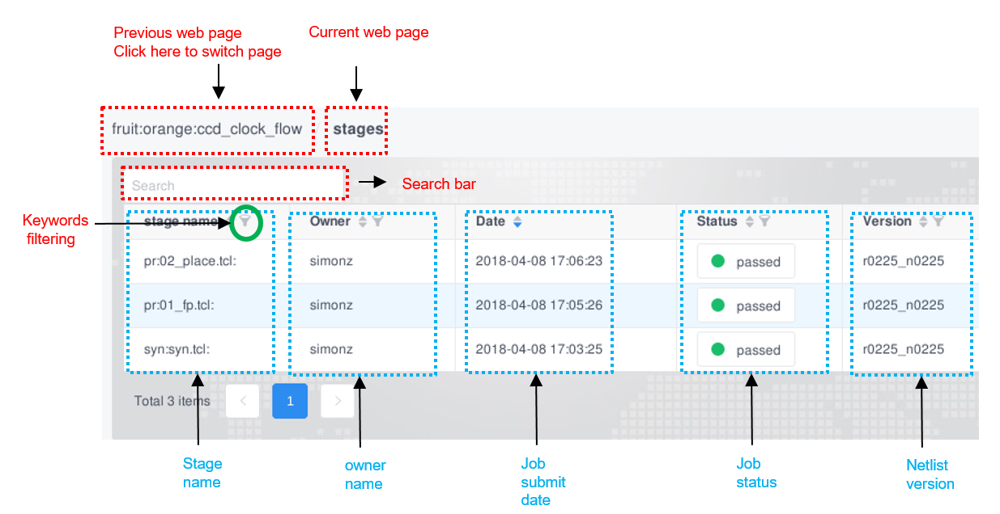
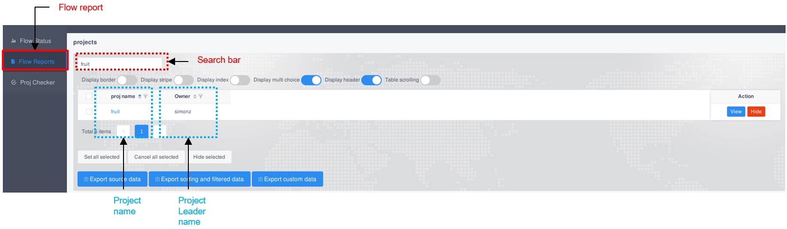
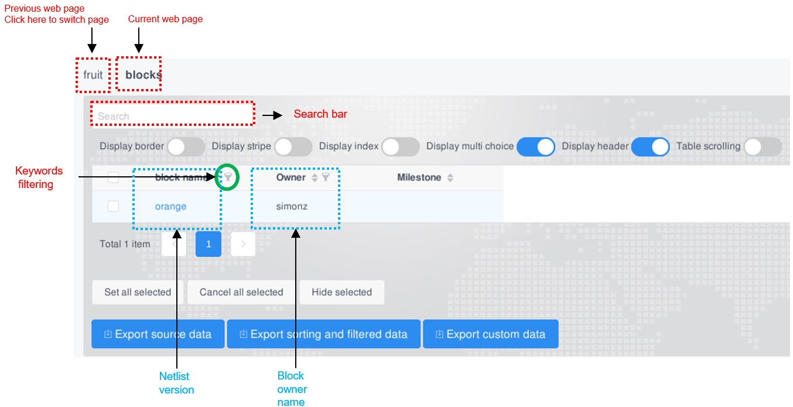
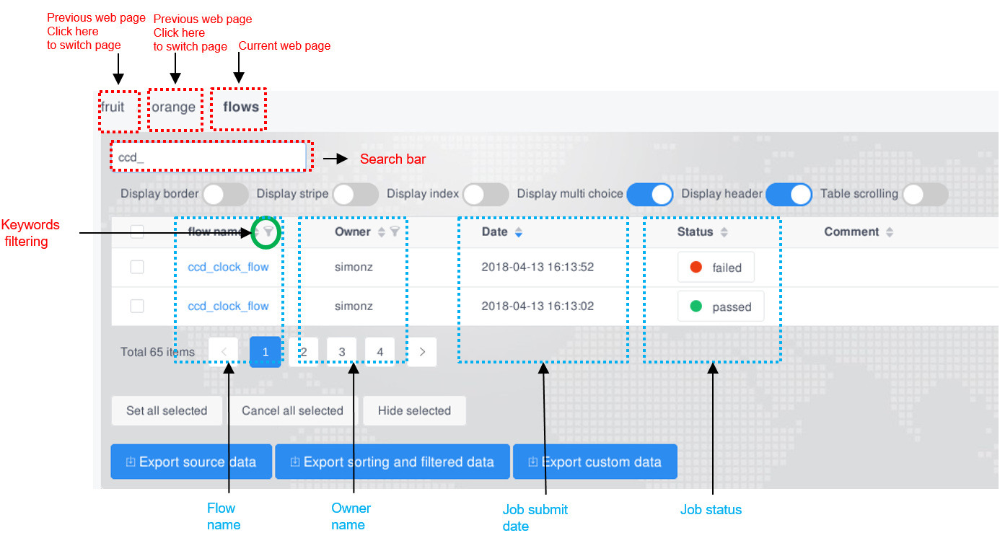
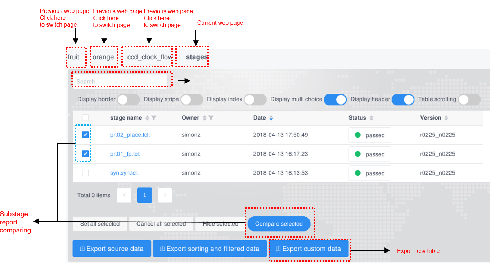
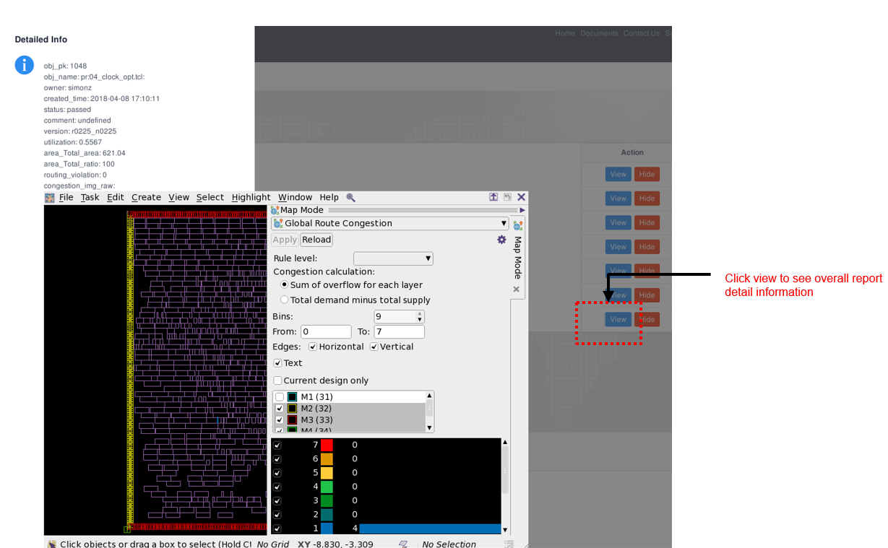

Web Architecture Introduction¶
Platform web part is used to cooperated with runner to provide more powerful features, meanwhile it is a data center, and all the flow running key information will be collected and shown by web part.
Database¶
A SQL Server built on PostgreSQL, and all possible information will be collected here.
Web Framework¶
A web framework built on Django, Vue, iView, and all demostration of data, documents, analysis, etc. will be done here.
How to access platform web¶
Visiting http://op.alchip.com.cn:8000 to open platform home in EoD linux.
home page
Enter your AD password, same as git password.

By using the home page, we can navigate several SPAs (single page applications) in the left column.
Note
Contact IT if you cannot login OP web.
SPA Flow Status¶
Flow status record every user’s 1 week run history. User can easily find the run job status and job process with Flow status page.
Flow status overview page
Flow status flow page

SPA Flow Reports¶
Flow Reports record every user’s all history reports. User can easily find the run job report with Flow Reports page.
Flow Reports project page
Flow Reports block page
Flow Reports flow page
FLOW Reports sub_stage page
FLOW Reports quick detail report view bottom

Platform development announcement¶
OP is under active development, and maybe have feature modification. Welcome to try our OP platform, and any questions or suggestions about platform, please contact guanyu_yi@alchip.com